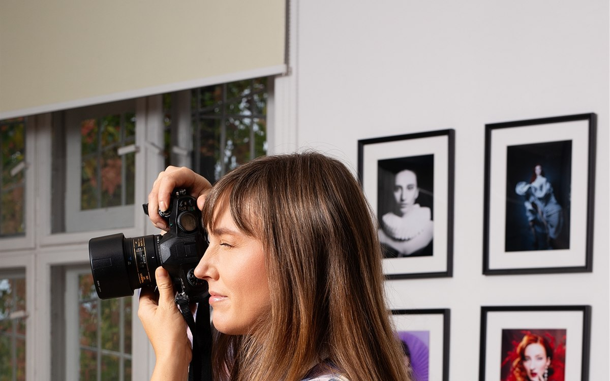

Durante muchos años, Aleksandra Dudyn trabajó en el sector financiero de una gran corporación. En la superficie, lo tenía todo: estabilidad, seguridad. Pero por dentro sabía que no era su camino. Lo que empezó como un pasatiempo — la fotografía — fue creciendo hasta convertirse en su verdadera vocación.
En esta entrevista, Aleksandra comparte su recorrido: dejar el mundo corporativo, abrazar su pasión por la fotografía, y ayudar a las mujeres a verse con otra luz.
Sobre los comienzos
Vivianne
Aleksandra, muchas gracias por acompañarme hoy. ¿Podrías empezar contándonos un poco sobre ti y tu trayectoria?
Aleksandra
"Gracias por invitarme. Me llamo Aleksandra Dudyn. Durante muchos años trabajé en una gran corporación, en el sector financiero. Tenía un buen puesto, estabilidad, pero por dentro sentía que no era mi camino. Siempre me había interesado la fotografía, pero la tomaba como un pasatiempo. Con el tiempo, ese pasatiempo empezó a ocupar cada vez más espacio en mi vida."
Sobre mostrar a las mujeres bajo otra luz
Vivianne
Hoy trabajas como fotógrafa, y una de las cosas por las que eres conocida es por mostrar a las mujeres bajo una luz mejor. ¿Nos cuentas más sobre eso?
Aleksandra
"Sí, esto es muy importante para mí. Muchas veces las mujeres llegan a una sesión y dicen: 'no soy fotogénica, salgo mal en las fotos'. Y no es cierto — es una cuestión de perspectiva. Yo trato de mostrar a las mujeres de una manera que las ayude a verse distinto: más bellas, más seguras, más auténticas. La fotografía nos da la oportunidad de capturar un momento y mostrar a una persona tal como realmente es."
Sobre dejar el mundo corporativo
Vivianne
¿Cómo te sentiste el primer día después de dejar la corporación?
Aleksandra
"Fue una sensación extraña. Por un lado, un alivio enorme — por fin no tenía que correr más en esa misma carrera. Pero por otro lado apareció la pregunta: ¿y ahora qué? No había jefe, no había horario, todo dependía de mí. Daba un poco de miedo, pero también era emocionante. Recuerdo sentirme más liviana, como si por fin pudiera respirar."
Vivianne
Mucha gente le teme a esa incertidumbre. ¿Cómo manejaste esos primeros meses sin saber cómo se vería el futuro?
Aleksandra
"Fue difícil, no lo voy a esconder. No tenía ninguna garantía de que iba a funcionar. Pero decidí confiar en el proceso. Empecé con pasos pequeños — sacándole fotos a amigas, después a amigas de amigas. Cada trabajo me daba más coraje. Me repetía: no tengo que saberlo todo de entrada, alcanza con ir en la dirección correcta."
Sobre la fotografía como vocación
Vivianne
¿Qué papel juega la fotografía para ti en lo personal — es solo trabajo, o algo más?
Aleksandra
"Para mí la fotografía no es solo trabajo. Es una manera de mirar el mundo. Cuando tengo la cámara en la mano, bajo el ritmo, veo más detalles, aprecio los momentos. Sobre todo trabajando con mujeres, siento que es algo más grande — que puedo mostrarles su propia belleza, su fuerza y su suavidad. Es también mi manera de darle algo bueno a los demás."
Sobre los desafíos y la identidad
Vivianne
¿Cuáles fueron los mayores desafíos que enfrentaste después de dejar el mundo corporativo?
Aleksandra
"Lo más duro fueron dos cosas. Primero — la estabilidad financiera. En la corporación el sueldo llegaba todos los meses y no tenía que preocuparme. Y de golpe tenía que organizar todo yo misma, conseguir clientas, planificar gastos. Eso fue estresante. Lo segundo fue la identidad. Durante años fui 'Aleksandra la de la corporación', con un cargo específico. Cuando eso desapareció, tuve que volver a responder: ¿quién soy?"
Vivianne
¿Y cómo redefiniste esa identidad?
Aleksandra
"Llevó tiempo. Al principio me costaba decir: 'soy fotógrafa', porque en mi cabeza tenía esa voz: no es cierto, es solo un pasatiempo. Pero de a poco me fui acostumbrando. Lo dije en voz alta: 'sí, me dedico a la fotografía', y cada vez me lo creí más. Ahora me sale natural. Soy fotógrafa y estoy orgullosa de serlo."
Sobre la fuerza y el apoyo
Vivianne
¿Qué te dio fuerza en esos momentos difíciles?
Aleksandra
"Dos cosas me ayudaron mucho. Primero — el apoyo de mis seres queridos. Tenía a mi marido, que acompañó esta transición y me decía: 'vos podés, hacé lo que amás'. Y segundo — la fotografía misma. Cuando estaba estresada, agarraba la cámara y salía a sacar fotos. Me calmaba, me recordaba por qué hago esto. Era mi terapia y mi fuente de energía."
Sobre el coraje y el propósito
Vivianne
¿Qué fue lo que más te sorprendió de ti misma en este recorrido?
Aleksandra
"Probablemente que soy más valiente de lo que pensaba. En la corporación me comparaba mucho con los demás, dudaba de si era lo suficientemente buena. Pero acá, cuando empecé a trabajar por mi cuenta, descubrí fuerza y determinación dentro de mí. Me di cuenta de que puedo tomar riesgos y confiar en mí misma. Ese fue un descubrimiento enorme."
Vivianne
Y hoy, ¿cómo describirías tu propósito en la vida?
Aleksandra
"Mi propósito es mostrarle a la gente la belleza — esa que muchas veces pasan por alto en sí mismas. Sobre todo a las mujeres, que suelen ser muy críticas con su apariencia. La fotografía les permite mirarse con más ternura, ver su fuerza, su sensibilidad, su singularidad. Si alguien me dice después de una sesión: 'no sabía que podía verme así' — esa es la mayor recompensa para mí."
Sobre el consejo para mujeres de más de 35
Vivianne
¿Qué consejo le darías a las mujeres que están en un lugar parecido — en un trabajo corporativo, pero sintiendo que no es su verdadero camino?
Aleksandra
"Antes que nada — escúchate. Muchas veces silenciamos esa voz interior porque tenemos miedo al cambio. Pero si algo nos agota y otra cosa nos da alegría, eso es una señal. No hace falta renunciar de inmediato, se puede empezar con pasos chicos — un curso, un taller, una experiencia nueva. Lo importante es notar qué te da energía. Y después animarte a dar el siguiente paso."
Sobre mirar hacia atrás
Vivianne
Mirando hacia atrás ahora, ¿te arrepentís de haber dejado la corporación?
Aleksandra
"No, ni por un momento. Por supuesto que hubo momentos difíciles, a veces dudas, pero en general siento que fue la mejor decisión de mi vida. Por fin vivo en coherencia conmigo misma, haciendo lo que amo. Si me hubiera quedado en la corporación, me arrepentiría todos los días."
Vivianne
¿Cuál fue el momento más hermoso para ti desde que hiciste este cambio?
Aleksandra
"Hubo muchos, pero recuerdo a una clienta que, después de una sesión, dijo con lágrimas en los ojos: 'por primera vez en mi vida me veo bella'. Fue increíblemente conmovedor para mí. En ese momento entendí que la fotografía puede ser más que fotos — puede ser una experiencia que cambia la manera en que nos vemos."
Sobre reescribir tu historia
Vivianne
Si pudieras compartir un solo mensaje con las mujeres de más de 35 que están buscando su propósito, ¿cuál sería?
Aleksandra
"Que nunca es tarde. Muchas veces escuchamos que no corresponde empezar ciertas cosas, que ya es tarde para cambiar. No es cierto. La madurez es una ventaja enorme — tenemos experiencia, sabemos lo que queremos y lo que no. Y es justamente ahora que podemos crear una vida que realmente nos pertenezca. Solo hay que creer en una misma y dar ese primer paso."
Vivianne
Muchas gracias, Aleksandra, por compartir tu historia con nosotras.
Aleksandra
"Gracias a ti. Espero que mi historia inspire a otras mujeres a escucharse y a animarse a cambiar."
Podés ver el trabajo de Aleksandra en @oleandraphoto.